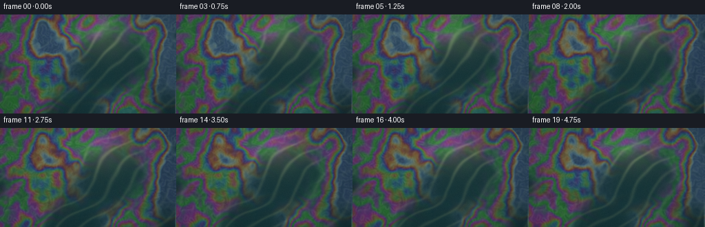
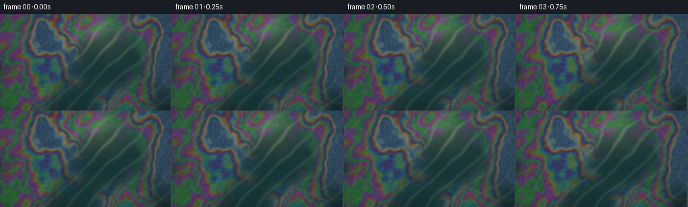
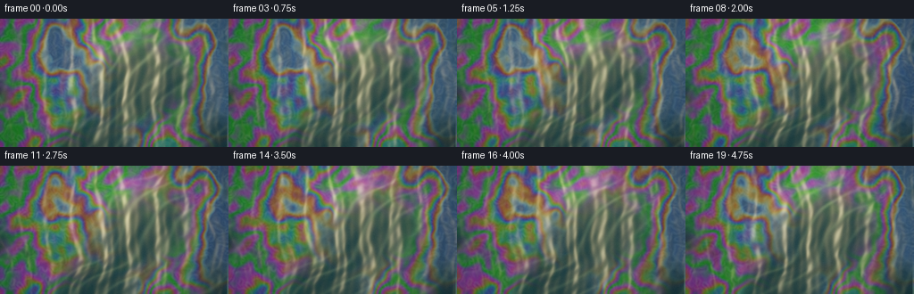
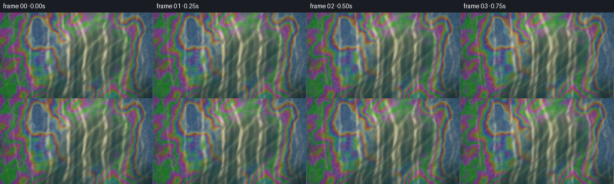
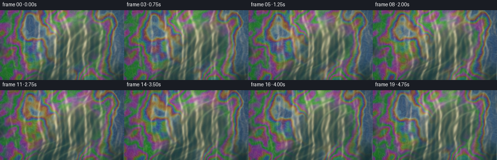
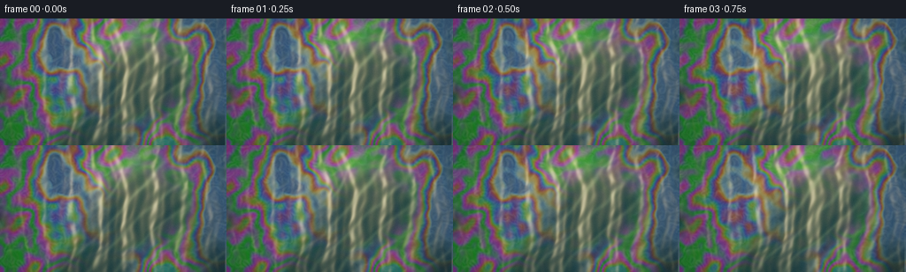

CODING AGENTS AS PIXEL WORLD MODELS
traex/DeepSeek-V4.1-Flash · phygen_084
点击播放 · 原生 RGB 像素
逐轮保存的候选
回放视频、检查图与代码变化。
每份候选均可单独播放。实际图片检查记录在下方工具轨迹中。
候选 01播放与检查图
点击播放 · 原生 RGB 像素


展开代码变化
--- 上一保存版本
+++ 本次保存版本
@@ -0,0 +1,261 @@
+from pathlib import Path
+
+import numpy as np
+from PIL import Image
+from scipy.ndimage import gaussian_filter, gaussian_gradient_magnitude, zoom
+
+from artifact_io import save
+
+
+ROOT = Path(__file__).resolve().parent
+WIDTH = 256
+HEIGHT = 144
+FRAMES = 20
+FPS = 4.0
+SUPERSAMPLE = 3
+W = WIDTH * SUPERSAMPLE
+H = HEIGHT * SUPERSAMPLE
+
+
+def smooth_noise(rng, shape, cell_size, sigma=0.8):
+ """Low-resolution value noise, smoothly interpolated to the render size."""
+ h, w = shape
+ low_h = max(3, int(np.ceil(h / cell_size)) + 2)
+ low_w = max(3, int(np.ceil(w / cell_size)) + 2)
+ values = rng.standard_normal((low_h, low_w)).astype(np.float32)
+ values = gaussian_filter(values, sigma=sigma)
+ field = zoom(values, (h / low_h, w / low_w), order=3)
+ field = field[:h, :w]
+ field -= field.mean()
+ field /= field.std() + 1e-6
+ return field.astype(np.float32)
+
+
+def fbm(rng, shape, base_cell, octaves=4):
+ total = np.zeros(shape, dtype=np.float32)
+ weight = 0.0
+ for octave in range(octaves):
+ amplitude = 0.56**octave
+ total += amplitude * smooth_noise(
+ rng, shape, max(5.0, base_cell / (1.75**octave)), sigma=0.9
+ )
+ weight += amplitude
+ total /= weight
+ total -= total.mean()
+ total /= total.std() + 1e-6
+ return total
+
+
+def logistic(x):
+ return 1.0 / (1.0 + np.exp(-np.clip(x, -30.0, 30.0)))
+
+
+def normalize(v):
+ return v / (np.linalg.norm(v) + 1e-8)
+
+
+def make_static_fields():
+ rng = np.random.default_rng(1847)
+ shape = (H, W)
+ fields = {
+ "warp_x": fbm(rng, shape, 150, 4),
+ "warp_y": fbm(rng, shape, 130, 4),
+ "thick": fbm(rng, shape, 118, 5),
+ "thick_fine": fbm(rng, shape, 38, 3),
+ "coverage": fbm(rng, shape, 170, 4),
+ "holes": fbm(rng, shape, 54, 3),
+ "micro": smooth_noise(rng, shape, 7, sigma=0.7),
+ "grain": rng.standard_normal(shape).astype(np.float32),
+ }
+ return fields
+
+
+FIELDS = make_static_fields()
+Y, X = np.mgrid[0:H, 0:W].astype(np.float32)
+XN = (X + 0.5) / W
+YN = (Y + 0.5) / H
+XS = (XN * 2.0 - 1.0) * (WIDTH / HEIGHT)
+YS = YN * 2.0 - 1.0
+
+
+def render_frame(index):
+ theta = 2.0 * np.pi * index / FRAMES
+ slow = 2.0 * np.pi * index / FRAMES
+
+ # Domain-warped coordinates give the oil a slow, viscous drift.
+ wx = XS + 0.075 * FIELDS["warp_x"] + 0.022 * np.sin(4.1 * YS - slow)
+ wy = YS + 0.060 * FIELDS["warp_y"] + 0.016 * np.sin(3.7 * XS + 0.7 * slow)
+ flow_x = 0.88 * wx + 0.42 * wy
+ flow_y = -0.38 * wx + 0.92 * wy
+
+ # A gently moving water surface. All terms complete an integer number of
+ # cycles over the clip, so the five-second loop has no visible velocity jump.
+ phase1 = 2.0 * np.pi * (1.18 * flow_x + 0.31 * flow_y) + slow
+ phase2 = 2.0 * np.pi * (2.27 * flow_x - 1.12 * flow_y) - 2.0 * slow
+ phase3 = 2.0 * np.pi * (4.35 * flow_x + 1.82 * flow_y) + 3.0 * slow
+ phase4 = 2.0 * np.pi * (7.10 * flow_x - 3.05 * flow_y) - 4.0 * slow
+ h = (
+ 0.0105 * np.sin(phase1)
+ + 0.0052 * np.sin(phase2)
+ + 0.0026 * np.sin(phase3)
+ + 0.0011 * np.sin(phase4)
+ )
+ # Derivatives of the same height field avoid normal-map tearing.
+ dhdx = (
+ 0.0105 * 2.0 * np.pi * 1.18 * np.cos(phase1)
+ + 0.0052 * 2.0 * np.pi * 2.27 * np.cos(phase2)
+ + 0.0026 * 2.0 * np.pi * 4.35 * np.cos(phase3)
+ + 0.0011 * 2.0 * np.pi * 7.10 * np.cos(phase4)
+ )
+ dhdy = (
+ 0.0105 * 2.0 * np.pi * 0.31 * np.cos(phase1)
+ - 0.0052 * 2.0 * np.pi * 1.12 * np.cos(phase2)
+ + 0.0026 * 2.0 * np.pi * 1.82 * np.cos(phase3)
+ - 0.0011 * 2.0 * np.pi * 3.05 * np.cos(phase4)
+ )
+ nx = -0.34 * dhdx
+ ny = -0.34 * dhdy
+ nz = np.ones_like(nx)
+ inv_len = 1.0 / np.sqrt(nx * nx + ny * ny + nz * nz)
+ nx *= inv_len
+ ny *= inv_len
+ nz *= inv_len
+
+ # Broad light field: warm, low sunlight from the upper right.
+ sun_center_x = 0.31 + 0.018 * np.sin(slow)
+ sun_center_y = -0.54
+ sun_glow = np.exp(
+ -((XS - sun_center_x) ** 2 / 0.34 + (YS - sun_center_y) ** 2 / 0.18)
+ )
+ reflected_sky = np.clip(0.50 + 0.70 * ny - 0.35 * nx, 0.0, 1.0)
+
+ # The gasoline thickness varies from roughly 170 to 720 nm. The RGB
+ # wavelengths are evaluated separately, producing the characteristic
+ # thin-film interference rather than a painted rainbow.
+ thickness = (
+ 395.0
+ + 176.0 * FIELDS["thick"]
+ + 62.0 * FIELDS["thick_fine"]
+ + 44.0 * np.sin(2.2 * flow_x - 1.8 * flow_y + 0.8 * slow)
+ + 24.0 * np.sin(5.1 * flow_y + 0.4 * slow)
+ )
+ thickness = np.clip(thickness, 135.0, 780.0)
+ film_mask = logistic(
+ 2.9 * FIELDS["coverage"]
+ + 1.1
+ + 0.45 * np.sin(2.4 * flow_y + 0.55 * slow)
+ - 1.15 * np.maximum(FIELDS["holes"] - 0.55, 0.0)
+ )
+ film_mask *= 0.90 + 0.10 * np.tanh(FIELDS["micro"] * 0.8)
+
+ wavelength = np.array([645.0, 545.0, 465.0], dtype=np.float32)
+ optical_phase = (
+ 4.0 * np.pi * 1.43 * thickness[..., None] / wavelength
+ + 0.20 * np.sin(0.8 * flow_x[..., None] + slow)
+ )
+ interference = 0.5 + 0.5 * np.cos(optical_phase)
+ # Real films are not neon: retain muted specular whites and deep reflected
+ # shadows, then boost saturation only where the light catches a ripple.
+ interference = 0.22 + 0.78 * interference**1.12
+
+ film_light = (
+ 0.29
+ + 0.34 * reflected_sky
+ + 0.22 * sun_glow
+ + 0.16 * (1.0 - nz)
+ )
+ film_rgb = interference * film_light[..., None]
+ film_rgb = film_rgb * np.array([1.08, 0.98, 1.02], dtype=np.float32)
+
+ # Deep reflected water under the film, with teal shadows and a warm sheen.
+ water_deep = np.array([0.017, 0.070, 0.079], dtype=np.float32)
+ water_mid = np.array([0.044, 0.150, 0.157], dtype=np.float32)
+ depth_tone = np.clip(0.34 + 0.31 * (1.0 - YN) + 0.08 * np.sin(2.5 * flow_x), 0, 1)
+ water = water_deep + (water_mid - water_deep) * depth_tone[..., None]
+ water += np.array([0.145, 0.105, 0.040], dtype=np.float32) * (
+ sun_glow * (0.42 + 0.38 * reflected_sky)
+ )[..., None]
+ water += np.array([0.024, 0.042, 0.047], dtype=np.float32) * reflected_sky[..., None]
+
+ # Fresnel-weighted blend; the film is strongest at glancing wave slopes.
+ fresnel = np.clip(0.055 + 0.42 * (1.0 - nz) ** 1.25, 0.0, 0.52)
+ mix = np.clip(film_mask * (0.70 + 0.26 * fresnel), 0.0, 0.93)
+ rgb = water * (1.0 - mix[..., None]) + film_rgb * mix[..., None]
+
+ # The film's wet edge catches a little more light.
+ edge = gaussian_gradient_magnitude(film_mask, sigma=2.2)
+ edge = edge / (edge.max() + 1e-7)
+ rgb += edge[..., None] * np.array([0.18, 0.22, 0.20], dtype=np.float32)
+
+ # Sun reflection on the ripples. Two lobes give a tight white glint and a
+ # softer amber halo around it.
+ light = normalize(np.array([0.37, -0.50, 0.79], dtype=np.float32))
+ n_dot_l = np.clip(nx * light[0] + ny * light[1] + nz * light[2], 0.0, 1.0)
+ reflected_z = np.clip(2.0 * n_dot_l * nz - light[2], 0.0, 1.0)
+ spec_tight = reflected_z**180
+ spec_soft = reflected_z**26
+ sun_weight = np.clip(
+ np.exp(-((XS - 0.20) ** 2 / 1.8 + (YS + 0.10) ** 2 / 1.4)), 0.0, 1.0
+ )
+ rgb += spec_tight[..., None] * sun_weight[..., None] * np.array(
+ [2.4, 2.1, 1.45], dtype=np.float32
+ )
+ rgb += spec_soft[..., None] * sun_weight[..., None] * np.array(
+ [0.30, 0.22, 0.09], dtype=np.float32
+ )
+
+ # A few coherent caustic ribbons in the water show through the film gaps.
+ caustic = (
+ 0.5
+ + 0.5
+ * np.sin(
+ 2.0 * np.pi * (3.1 * flow_x + 1.1 * flow_y)
+ + 1.2 * np.sin(4.3 * flow_y - 0.6 * slow)
+ + 2.0 * slow
+ )
+ ) ** 9
+ caustic *= (1.0 - 0.65 * film_mask) * (0.32 + 0.68 * sun_glow)
+ rgb += caustic[..., None] * np.array([0.16, 0.18, 0.10], dtype=np.float32)
+
+ # Subtle exposure variation and a small amount of photographic grain.
+ rgb *= (0.96 + 0.045 * np.cos(2.0 * np.pi * YN - 0.35))[..., None]
+ rgb += FIELDS["grain"][..., None] * 0.0085
+ rgb = np.maximum(rgb, 0.0)
+
+ # Soft bloom from the real highlights.
+ highlights = np.maximum(rgb - 0.73, 0.0)
+ bloom = np.stack(
+ [gaussian_filter(highlights[..., c], sigma=7.0) for c in range(3)], axis=-1
+ )
+ rgb += bloom * np.array([0.20, 0.17, 0.11], dtype=np.float32)
+
+ # Gentle filmic shoulder keeps the iridescence colorful without clipping.
+ rgb = 1.0 - np.exp(-rgb * 1.32)
+ rgb = np.power(np.clip(rgb, 0.0, 1.0), 0.86)
+
+ # Cool shadows, warm highlights, and a restrained lens vignette.
+ luminance = rgb @ np.array([0.2126, 0.7152, 0.0722], dtype=np.float32)
+ rgb += (1.0 - luminance[..., None]) * np.array(
+ [0.004, 0.010, 0.013], dtype=np.float32
+ )
+ rgb += luminance[..., None] ** 2 * np.array(
+ [0.018, 0.009, -0.006], dtype=np.float32
+ )
+ radius2 = (XS / 1.85) ** 2 + (YS / 1.12) ** 2
+ vignette = np.clip(1.0 - 0.12 * radius2**1.25, 0.80, 1.0)
+ rgb *= vignette[..., None]
+
+ rgb8 = np.clip(rgb * 255.0 + 0.5, 0, 255).astype(np.uint8)
+ image = Image.fromarray(rgb8, "RGB").resize(
+ (WIDTH, HEIGHT), Image.Resampling.LANCZOS
+ )
+ return np.asarray(image, dtype=np.uint8)
+
+
+def main():
+ frames = np.stack([render_frame(i) for i in range(FRAMES)])
+ save(frames, ROOT)
+
+
+if __name__ == "__main__":
+ main()
候选 02播放与检查图
点击播放 · 原生 RGB 像素


展开代码变化
--- 上一保存版本
+++ 本次保存版本
@@ -113,8 +113,8 @@
+ 0.0026 * 2.0 * np.pi * 1.82 * np.cos(phase3)
- 0.0011 * 2.0 * np.pi * 3.05 * np.cos(phase4)
)
- nx = -0.34 * dhdx
- ny = -0.34 * dhdy
+ nx = -1.30 * dhdx
+ ny = -1.30 * dhdy
nz = np.ones_like(nx)
inv_len = 1.0 / np.sqrt(nx * nx + ny * ny + nz * nz)
nx *= inv_len
@@ -166,6 +166,11 @@
)
film_rgb = interference * film_light[..., None]
film_rgb = film_rgb * np.array([1.08, 0.98, 1.02], dtype=np.float32)
+ film_luma = film_rgb @ np.array([0.2126, 0.7152, 0.0722], dtype=np.float32)
+ film_rgb = film_luma[..., None] + 1.30 * (
+ film_rgb - film_luma[..., None]
+ )
+ film_rgb = np.clip(film_rgb, 0.0, 1.35)
# Deep reflected water under the film, with teal shadows and a warm sheen.
water_deep = np.array([0.017, 0.070, 0.079], dtype=np.float32)
@@ -187,13 +192,17 @@
edge = edge / (edge.max() + 1e-7)
rgb += edge[..., None] * np.array([0.18, 0.22, 0.20], dtype=np.float32)
- # Sun reflection on the ripples. Two lobes give a tight white glint and a
- # softer amber halo around it.
+ # Sun reflection on the ripples. The half-vector formulation places the
+ # broken glints where wave facets actually reflect the low sun toward view.
light = normalize(np.array([0.37, -0.50, 0.79], dtype=np.float32))
- n_dot_l = np.clip(nx * light[0] + ny * light[1] + nz * light[2], 0.0, 1.0)
- reflected_z = np.clip(2.0 * n_dot_l * nz - light[2], 0.0, 1.0)
- spec_tight = reflected_z**180
- spec_soft = reflected_z**26
+ half_vector = normalize(light + np.array([0.0, 0.0, 1.0], dtype=np.float32))
+ n_dot_h = np.clip(
+ nx * half_vector[0] + ny * half_vector[1] + nz * half_vector[2],
+ 0.0,
+ 1.0,
+ )
+ spec_tight = n_dot_h**78
+ spec_soft = n_dot_h**15
sun_weight = np.clip(
np.exp(-((XS - 0.20) ** 2 / 1.8 + (YS + 0.10) ** 2 / 1.4)), 0.0, 1.0
)
@@ -230,8 +239,8 @@
rgb += bloom * np.array([0.20, 0.17, 0.11], dtype=np.float32)
# Gentle filmic shoulder keeps the iridescence colorful without clipping.
- rgb = 1.0 - np.exp(-rgb * 1.32)
- rgb = np.power(np.clip(rgb, 0.0, 1.0), 0.86)
+ rgb = 1.0 - np.exp(-rgb * 1.66)
+ rgb = np.power(np.clip(rgb, 0.0, 1.0), 0.88)
# Cool shadows, warm highlights, and a restrained lens vignette.
luminance = rgb @ np.array([0.2126, 0.7152, 0.0722], dtype=np.float32)
@@ -246,7 +255,7 @@
rgb *= vignette[..., None]
rgb8 = np.clip(rgb * 255.0 + 0.5, 0, 255).astype(np.uint8)
- image = Image.fromarray(rgb8, "RGB").resize(
+ image = Image.fromarray(rgb8).resize(
(WIDTH, HEIGHT), Image.Resampling.LANCZOS
)
return np.asarray(image, dtype=np.uint8)
候选 03播放与检查图
点击播放 · 原生 RGB 像素


展开代码变化
--- 上一保存版本
+++ 本次保存版本
@@ -136,14 +136,14 @@
395.0
+ 176.0 * FIELDS["thick"]
+ 62.0 * FIELDS["thick_fine"]
- + 44.0 * np.sin(2.2 * flow_x - 1.8 * flow_y + 0.8 * slow)
- + 24.0 * np.sin(5.1 * flow_y + 0.4 * slow)
+ + 44.0 * np.sin(2.2 * flow_x - 1.8 * flow_y + slow)
+ + 24.0 * np.sin(5.1 * flow_y + 2.0 * slow)
)
thickness = np.clip(thickness, 135.0, 780.0)
film_mask = logistic(
2.9 * FIELDS["coverage"]
+ 1.1
- + 0.45 * np.sin(2.4 * flow_y + 0.55 * slow)
+ + 0.45 * np.sin(2.4 * flow_y + slow)
- 1.15 * np.maximum(FIELDS["holes"] - 0.55, 0.0)
)
film_mask *= 0.90 + 0.10 * np.tanh(FIELDS["micro"] * 0.8)
可观测工具轨迹
实际执行的命令与返回图片。
命令 1exit 0
/bin/bash -c "pwd && rg --files -g 'prompt.txt' -g 'GENERATION_RULES.md' -g 'task_spec.json' -g '"'!node_modules'"' -g '"'!vendor'"'"
命令 2exit 0
/bin/bash -c "ls -la && find . -maxdepth 2 -type f -printf '%p\\n' | sort | head -200"
命令 3exit 0
/bin/bash -c 'cat prompt.txt'
命令 4exit 0
/bin/bash -c 'cat GENERATION_RULES.md'
命令 5exit 0
/bin/bash -c 'cat task_spec.json'
命令 6exit 0
/bin/bash -c "sed -n '1,240p' artifact_io.py && sed -n '1,220p' player_template.html"
命令 7exit 0
/bin/bash -c "python - <<'PY'
import sys
import numpy, PIL
print('python', sys.version.split()[0])
print('numpy', numpy.__version__)
print('PIL', PIL.__version__)
try:
import scipy; print('scipy', scipy.__version__)
except Exception as e: print('scipy unavailable', e)
PY"命令 8exit 0
/bin/bash -c 'command -v ffmpeg || true; command -v convert || true; command -v magick || true'
命令 9exit 0
/bin/bash -c 'command -v chafa || true; command -v viu || true; command -v jp2 || true; command -v img2txt || true; command -v kitty || true'
命令 10exit 0
/bin/bash -c "python - <<'PY'
from PIL import Image
import numpy as np
from pathlib import Path
for f in ['/usr/share/backgrounds/Ubuntu-Warty-final-2.jpg','/usr/share/pixmaps/debian-logo.png']:
p=Path(f)
if p.exists():
im=Image.open(p).convert('RGB').resize((64,36))
a=np.array(im)
chars=' .:-=+*#%@'
print(f)
for row in a.mean(2):
print(''.join(chars[min(9,int(v/25.6))] for v in row))
PY"命令 11exit 1
/bin/bash -c 'python generate.py'
命令 12exit 0
/bin/bash -c "python generate.py && python - <<'PY'
from PIL import Image
import numpy as np
im=np.array(Image.open('inspection.png'))
print('inspection',im.shape)
for i in [0,5,10,15,19]:
a=np.array(Image.open(f'frames/{i:02d}.png'))
print(i, 'mean',a.mean((0,1)).round(1), 'std',a.std().round(1), 'p95',np.percentile(a,95).round(1), 'sat', ((a.max(2)-a.min(2))>50).mean().round(3))
PY"命令 13exit 0
/bin/bash -c "python - <<'PY'
import generate as g
import numpy as np
# replicate selected internals with introspection not easy; report image regional stats
from PIL import Image
for i in [0,10]:
a=np.array(Image.open(f'frames/{i:02d}.png')).astype(float)
print('frame',i)
for name, sl in [('top',(slice(0,48),slice(None))),('mid',(slice(48,96),slice(None))),('bot',(slice(96,144),slice(None))),('right',(slice(None),slice(192,256))),('left',(slice(None),slice(0,64)) )]:
b=a[sl]
print(name, b.mean((0,1)).round(1), 'max',b.max(), 'sat', ((b.max(2)-b.min(2))>50).mean().round(2))
PY"命令 14exit 0
/bin/bash -c "python - <<'PY'
from PIL import Image
import numpy as np
im=Image.open('inspection.png').crop((0,0,1024,165)).resize((128,21))
a=np.array(im)
chars=' .:-=+*#%@'
for row in a.mean(2):
print(''.join(chars[min(9,int(v/25.6))] for v in row))
PY"命令 15exit 0
/bin/bash -c "python - <<'PY'
from PIL import Image
import numpy as np
frames=np.stack([np.array(Image.open(f'frames/{i:02d}.png')).astype(np.float32) for i in range(20)])
for i in range(1,20):
d=np.abs(frames[i]-frames[i-1])
print(f'{i:02d}', f'mae={d.mean():.2f}', f'changed>8={(d.max(2)>8).mean():.3f}', f'changed>24={(d.max(2)>24).mean():.3f}')
print('range',frames.min(),frames.max(), 'mean', frames.mean(), 'std',frames.std())
PY"命令 16exit 0
/bin/bash -c "python - <<'PY'
from PIL import Image
import numpy as np
im=np.array(Image.open('frames/00.png')).astype(float)
# quantize hue categories; print a coarse color map with RGB bins
for y in range(0,144,8):
line=''
for x in range(0,256,4):
b=im[y:y+8,x:x+4].mean((0,1)); r,g,bl=b
if max(b)<45: c=' '
elif max(b)-min(b)<15: c='.'
elif r>g*1.25 and r>bl*1.2: c='R'
elif g>r*1.2 and g>bl*1.05: c='G'
elif bl>r*1.2 and bl>g*1.05: c='B'
elif r>g*1.08 and g>bl*1.1: c='Y'
elif g>r*1.08 and bl>r*1.1: c='C'
elif r>g*1.05 and bl>g*1.05: c='M'
else: c='o'
line+=c
print(line)
PY"命令 17exit 0
/bin/bash -c "python generate.py && python - <<'PY'
from PIL import Image
import numpy as np
frames=np.stack([np.array(Image.open(f'frames/{i:02d}.png')) for i in range(20)])
for i in [0,5,10,15,19]:
a=frames[i].astype(float)
print(i, 'mean',a.mean((0,1)).round(1), 'std',a.std().round(1), 'p95',np.percentile(a,95).round(1), 'p99',np.percentile(a,99).round(1), 'sat',((a.max(2)-a.min(2))>50).mean().round(3), 'bright',(a.max(2)>200).mean().round(4))
print('loop diff',np.abs(frames[-1].astype(float)-frames[0].astype(float)).mean())
PY"命令 18exit 0
/bin/bash -c "python generate.py && python - <<'PY'
from pathlib import Path
from PIL import Image
import numpy as np, json, re
root=Path('.')
frames=np.stack([np.array(Image.open(root/'frames'/f'{i:02d}.png')) for i in range(20)])
assert frames.shape==(20,144,256,3) and frames.dtype==np.uint8
assert frames.min()>=0 and frames.max()<=255
assert len(list((root/'frames').glob('*.png')))==20
print('frames',frames.shape,'mean',frames.mean().round(2),'std',frames.std().round(2))
print('per-frame mean RGB')
for i in [0,4,8,12,16,19]:
a=frames[i].astype(float)
print(f'{i:02d}',a.mean((0,1)).round(1), 'contrast',a.std().round(1), 'colorful',((a.max(2)-a.min(2))>45).mean().round(3))
d=np.abs(np.diff(frames.astype(np.int16),axis=0))
print('motion mae mean',d.mean().round(2),'range',d.mean((1,2,3)).min().round(2),d.mean((1,2,3)).max().round(2))
print('artifacts',[(p.name,p.stat().st_size) for p in [root/'pixels.npz',root/'inspection.png',root/'index.html',root/'generate.py']])
# Validate the compact player payload decodes to exactly 20 frames.
html=(root/'index.html').read_text()
m=re.search(r'const DATA=(\\{.*?\\}),W=',html,re.S)
assert m
spec=json.loads(m.group(1))
print('player',spec['width'],spec['height'],spec['frames'],spec['fps'],'deltas',len(spec['deltas']))
PY"保存候选 3 份；完成命令 18 次；可验证图片返回 0 张。原始 API 响应与完整日志保留在本地。